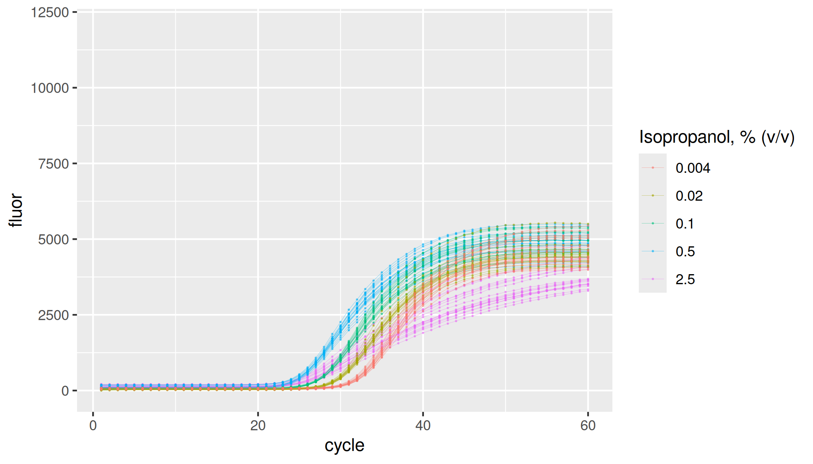

lievens provides Real-Time PCR Data Sets by Lievens et al. (2012).
Installation
install.packages("lievens")Data
Each sample group is defined by the inhibitor (“none”, “isopropanol”, “tannic acid”), respective inhibitor concentration, and initial amplicon copy number. Note that inhibitor concentration and initial copy number of the amplicon are not independent of each other as concentrations are obtained by co-dilution.
library(lievens)
library(ggplot2)
library(dplyr, warn.conflicts = FALSE)
lievens |>
dplyr::distinct(plate, inhibitor, inhibitor_conc, copies, dilution)
#> # A tibble: 15 × 5
#> plate inhibitor inhibitor_conc copies dilution
#> <fct> <fct> <dbl> <int> <int>
#> 1 soy none 0 100000 1
#> 2 soy none 0 20000 5
#> 3 soy none 0 4000 25
#> 4 soy none 0 800 125
#> 5 soy none 0 160 625
#> 6 soy+isopropanol isopropanol 2.5 100000 1
#> 7 soy+isopropanol isopropanol 0.5 20000 5
#> 8 soy+isopropanol isopropanol 0.1 4000 25
#> 9 soy+isopropanol isopropanol 0.02 800 125
#> 10 soy+isopropanol isopropanol 0.004 160 625
#> 11 soy+tannic acid tannic acid 0.2 100000 1
#> 12 soy+tannic acid tannic acid 0.04 20000 5
#> 13 soy+tannic acid tannic acid 0.008 4000 25
#> 14 soy+tannic acid tannic acid 0.0016 800 125
#> 15 soy+tannic acid tannic acid 0.0032 160 625Here is the number of replicates per group:
lievens |>
dplyr::distinct(plate, inhibitor, inhibitor_conc, copies, dilution, replicate) |>
dplyr::count(plate, inhibitor, inhibitor_conc, copies, dilution) |>
print(n = Inf)
#> # A tibble: 15 × 6
#> plate inhibitor inhibitor_conc copies dilution n
#> <fct> <fct> <dbl> <int> <int> <int>
#> 1 soy none 0 160 625 18
#> 2 soy none 0 800 125 18
#> 3 soy none 0 4000 25 18
#> 4 soy none 0 20000 5 18
#> 5 soy none 0 100000 1 18
#> 6 soy+isopropanol isopropanol 0.004 160 625 18
#> 7 soy+isopropanol isopropanol 0.02 800 125 18
#> 8 soy+isopropanol isopropanol 0.1 4000 25 18
#> 9 soy+isopropanol isopropanol 0.5 20000 5 18
#> 10 soy+isopropanol isopropanol 2.5 100000 1 18
#> 11 soy+tannic acid tannic acid 0.0016 800 125 18
#> 12 soy+tannic acid tannic acid 0.0032 160 625 18
#> 13 soy+tannic acid tannic acid 0.008 4000 25 18
#> 14 soy+tannic acid tannic acid 0.04 20000 5 18
#> 15 soy+tannic acid tannic acid 0.2 100000 1 18Standard dilution series
Most concentrated set of replicates in the dilution series have 100,000 copies of the soybean Lectin endogene (Le1) derived amplicon. Following samples in the series are five-fold dilutions.
lievens |>
dplyr::filter(inhibitor == "none") |>
ggplot(aes(x = cycle, y = fluor, group = interaction(plate, inhibitor, dilution, replicate), col = as.factor(dilution))) +
geom_line(linewidth = 0.1, alpha = 0.5) +
geom_point(size = 0.05, alpha = 0.5) +
labs(color = "Fold dilution") +
ylim(0, 12000)
Inhibition by isopropanol
lievens |>
dplyr::filter(inhibitor == "isopropanol") |>
ggplot(aes(x = cycle, y = fluor, group = interaction(plate, inhibitor, inhibitor_conc, replicate), col = as.factor(inhibitor_conc))) +
geom_line(linewidth = 0.1, alpha = 0.5) +
geom_point(size = 0.05, alpha = 0.5) +
labs(color = "Isopropanol, % (v/v)") +
ylim(0, 12000)
Inhibition by tannic acid
lievens |>
dplyr::filter(inhibitor == "tannic acid") |>
ggplot(aes(x = cycle, y = fluor, group = interaction(plate, inhibitor, inhibitor_conc, replicate), col = as.factor(inhibitor_conc))) +
geom_line(linewidth = 0.1, alpha = 0.5) +
geom_point(size = 0.05, alpha = 0.5) +
labs(color = "Tannic acid, mg/mL") +
ylim(0, 12000)
#> Warning: Removed 74 rows containing missing values or values outside the scale range
#> (`geom_line()`).
#> Warning: Removed 74 rows containing missing values or values outside the scale range
#> (`geom_point()`).